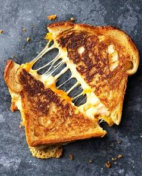

Grilled Cheese

A grilled cheese is a hot sandwich typically made by toasting slices of bread with butter or mayonnaise and a filling of cheese until the bread browns and the cheese melts. While the name implies grilling, it's more commonly cooked on a griddle or in a pan. Often associated with comfort food, it is a simple yet satisfying meal enjoyed by many. You can customize it with different kinds of bread and cheese, and even add other ingredients like peppers or tomatoes.
Ingredients
- Bread: Choose a sturdy bread like white bread or sourdough. Some also prefer rye, brioche, or challah. You want a bread that can stand up to the cooking process without becoming too soft or falling apart.
- Cheese: The classic choice is cheddar cheese, known for its sharp flavor and good melting properties. American cheese is also a popular choice for its creamy texture and nostalgic taste. You can also experiment with other cheeses like Gruyère, Gouda, Fontina, or Havarti, depending on your preference for taste and meltiness.
- Fat: Butter or mayonnaise is typically used to brown and crisp the outside of the bread. Some people prefer butter for its classic flavor, while others find that mayonnaise creates a crispier crust and is easier to spread
- Prepare your bread
Select your preferred bread, such as classic white bread or sourdough.
Spread a layer of softened butter or mayonnaise evenly on one side of each slice of bread, ensuring it reaches the edges for an optimal crust.
- Assemble the sandwich
Place one slice of bread, buttered-side down, in a nonstick skillet preheated over medium-low heat.
Layer your chosen cheese (e.g., cheddar, American, Gruyère) evenly over the unbuttered side of the bread.
Top with the second slice of bread, buttered-side up.
- Cook the sandwich
Cook the first side for 3-4 minutes, or until the bread is golden brown and crispy.
Carefully flip the sandwich and cook the other side for another 3-4 minutes, or until it's also golden brown and the cheese is melted and gooey.
If the bread is browning too quickly, reduce the heat to allow the cheese to melt fully without burning the bread.
- Remove the sandwich from the skillet and place on a cutting board.
Let it cool for a minute to allow the cheese to set slightly before slicing.
Cut the sandwich in half and serve hot.
Home